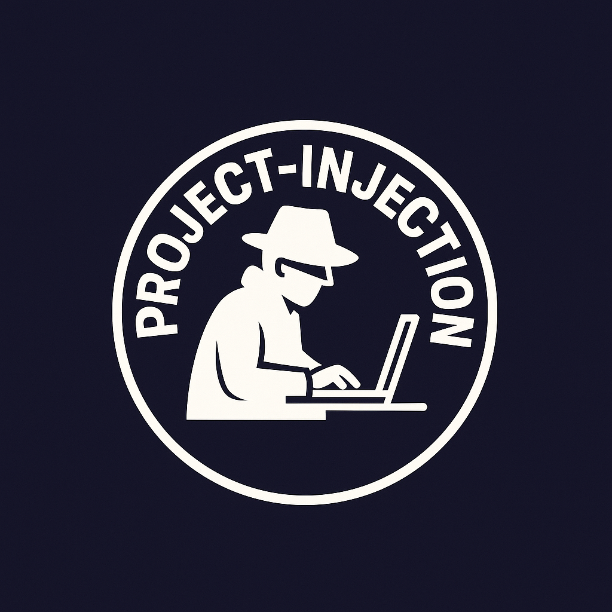

<!DOCTYPE html>
<html lang="en">
<body>
    <div class="sira-dot" id="sira-dot-0"></div>
    <div class="sira-dot" id="sira-dot-1"></div>
    <div class="sira-dot" id="sira-dot-2"></div>
    <div class="sira-dot" id="sira-dot-3"></div>
    <div class="sira-dot" id="sira-dot-4"></div>

    <script src="./public/js/index-script.js"></script> <script src="./public/js/sira-cursor.js"></script> </body>
</html>
<head>
    <meta charset="UTF-8">
    <meta name="viewport" content="width=device-width, initial-scale=1.0">
    <title>Project Injection - About Us</title>
    <link rel="stylesheet" href="./public/css/style.css">
    <link rel="stylesheet" href="https://cdnjs.cloudflare.com/ajax/libs/font-awesome/6.0.0-beta3/css/all.min.css">
</head>
<body>
    <div class="sira-dot"></div>

    <header>
        <nav>
            <div class="logo">
                
                Project Injection
            </div>
            <ul>
                <!-- <li><a href="#" class="all-courses-btn"><i class="fas fa-th-large icon"></i> All Courses</a></li> -->
                <!-- <li class="search-container">
                    <input type="text" placeholder="Search something" class="search-input">
                    <i class="fas fa-search search-icon"></i>
                </li> -->
            </ul>
        </nav>
        <nav class="secondary-nav">
            <ul>
                <li><a href="index.html">Home</a></li>
                <li><a href="subscription.html">Subscription</a></li>
                <li><a href="try-injection.html">Try Injection</a></li>
                <li><a href="about-us.html" class="active">About Us</a></li>
                <!-- <li><a href="resources.html">Resources</a></li> -->
                <li><a href="blog.html">Blog</a></li>
            </ul>
        </nav>
    </header>

    <div class="container">
        <section id="about-us-intro">
            <h2>About Project Injection</h2>
            <div class="about-content">
                <div class="about-text">
                    <p>Welcome to **Project Injection**, an interactive platform dedicated to demystifying web application security. Led by **Aashutosh Thakur**, our mission is to empower developers and security enthusiasts with a deep understanding of common web vulnerabilities and, more importantly, the practical techniques to effectively prevent them.</p>
                </div>
                <div class="about-image-placeholder">
                    
                    <p style="text-align: center; margin-top: 1px; ">Aashutosh Thakur</p>
                </div>
            </div>
        </section>

        <hr>

        <section id="our-founder">
            <h2>Meet Aashutosh Thakur, The Developer</h2>
            <p>Aashutosh Thakur is a passionate B.Tech CSE student specializing in Cybersecurity from Rashtriya Raksha University. With a robust foundation in programming languages including C, C++, Java, Python, SQL, and Dart, complemented by expertise in essential security tools like Burp Suite, Wireshark, and Autopsy, Aashutosh brings a comprehensive skill set to the forefront of cyber defense.</p>

            <h3>Journey in Cybersecurity:</h3>
            <ul>
                <li>As a Cyber Security Intern at Hacktify, Aashutosh gained hands-on penetration testing experience across a spectrum of critical vulnerabilities. This includes Cross-Site Scripting (XSS), HTML Injection, Insecure Direct Object References (IDOR), SQL Injection, Cross-Origin Resource Sharing (CORS), and Cross-Site Request Forgery (CSRF) Labs.</li>
                <li>Further enhancing practical skills, Aashutosh served as a Forensic Expert for MFEC (RRU-MHA), actively contributing to digital forensics efforts.</li>
                <li>Aashutosh has also been a Co-Lead for The Cyber Alliance, an active cybersecurity community where participation in Capture The Flag (CTF) challenges deepened practical knowledge.</li>
            </ul>

            <h3>The Vision Behind Project Injection:</h3>
            <p>Project Injection stems from Aashutosh's ongoing commitment to secure data management and user-friendly technology, directly evolving from the "SiRa: Keeps Every Record" project. This foundational work focused on developing a secure platform for centralized patient records, enabling emergency access to critical medical information, designing intuitive interfaces for health data management, implementing robust data encryption for privacy and compliance, and leveraging data-driven decisions to enhance healthcare outcomes. Project Injection applies these very principles to education, making complex security concepts accessible and actionable for everyone.</p>

            <h3>Achievements & Continuous Learning:</h3>
            <p>Aashutosh's dedication to cybersecurity is consistently demonstrated through notable achievements, including completing the Google Cybersecurity course, active participation in the SIH Internal Hackathon, AppSec Hackathon, and the SOEBIT Cybersecurity Symposium. A continuous pursuit of knowledge through platforms like Google Cloud Skills Boost and Google AI Essentials ensures that Project Injection remains at the forefront of security education, delivering relevant and cutting-edge insights.</p>
        </section>
    </div>

    <footer>
        <p>&copy; 2025 Project Injection. All rights reserved.</p>
    </footer>

    <script src="./public/js/sira-cursor.js"></script>
</body>
</html>